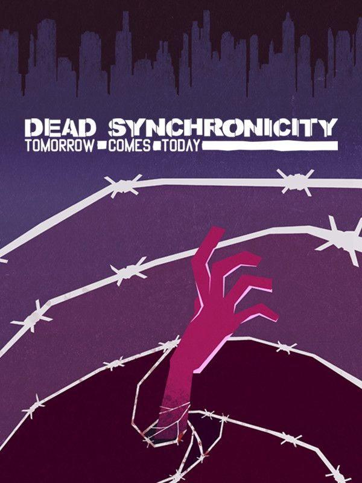

Dead Synchronicity: Tomorrow Comes Today
Dead Synchronicity: Tomorrow Comes Today
Details
|  | |
| Playtime | Not Played |
| Last Activity | Never |
| Added | 4/12/2022 22:47:41 |
| Modified | 5/3/2022 21:49:42 |
| Completion Status | $Check Out |
| Library | Steam |
| Source | Steam |
| Platform | PC (Windows) |
| Release Date | 4/10/2015 |
| Community Score | 80 |
| Critic Score | 73 |
| User Score | |
| Genre | Adventure Point-and-click |
| Developer | Fictiorama Studios |
| Publisher | Daedalic |
| Feature | Single Player |
| Links | Official Website Steam GOG Wikipedia |
| Tag | [EMT] Logo Missing |
Description
Dead Synchronicity stands as a modern adventure classic, telling a dark, sad and brutal tale that will leave you wanting more, but equally satisfied.
80% - Adventure Gamers
Darkness.
And then there was light… but not enough for Michael to find out who he is and what happened to the world out there. The “Great Wave”, the “dissolved”... are just hollow words in his looted mind.
"Dead Synchronicity: Tomorrow Comes Today" is the first part of the "Dead Synchronicity" series:
Help Michael face a dying reality, a universe that’s fading away. Face a merciless world that gets sick and vanishes. Face no past, no present, no future. Face the impending moment of “dead synchronicity”.
And you’d better hurry. Because, otherwise... what will you do when Time dissolves itself?
A terrible pandemic is turning all of humanity into “the dissolved” - the sick whose deliria provide them with supernatural cognitive powers... but also steer them towards a gruesome death.
The root of this illness seems to be “the Great Wave”, an inexplicable chain of natural disasters that destroyed all energy sources and communications and plunged the world into a chaos ruthlessly controlled by both the authorities and the army alike.
Michael, a man with no past, will have to recover his identity and decode the events that brought the world to the edge of collapse. Because, if he doesn’t hurry, he won’t be able to avoid the impending moment of “dead synchronicity”, when Time itself dissolves…
Dead Synchronicity: Tomorrow Comes Today is a point and click adventure that features a stunning dystopian plot, a distinctive, expressionist 2D art style, and an atmospheric soundtrack.
The game pays homage to classic adventures (The Secret of Monkey Island, Broken Sword, Day of the Tentacle...) but revolves around a more mature theme, along the lines of games such as I Have no Mouth and I Must Scream or Sanitarium.
80% - Adventure Gamers
Darkness.
And then there was light… but not enough for Michael to find out who he is and what happened to the world out there. The “Great Wave”, the “dissolved”... are just hollow words in his looted mind.
"Dead Synchronicity: Tomorrow Comes Today" is the first part of the "Dead Synchronicity" series:
Help Michael face a dying reality, a universe that’s fading away. Face a merciless world that gets sick and vanishes. Face no past, no present, no future. Face the impending moment of “dead synchronicity”.
And you’d better hurry. Because, otherwise... what will you do when Time dissolves itself?
A terrible pandemic is turning all of humanity into “the dissolved” - the sick whose deliria provide them with supernatural cognitive powers... but also steer them towards a gruesome death.
The root of this illness seems to be “the Great Wave”, an inexplicable chain of natural disasters that destroyed all energy sources and communications and plunged the world into a chaos ruthlessly controlled by both the authorities and the army alike.
Michael, a man with no past, will have to recover his identity and decode the events that brought the world to the edge of collapse. Because, if he doesn’t hurry, he won’t be able to avoid the impending moment of “dead synchronicity”, when Time itself dissolves…
Dead Synchronicity: Tomorrow Comes Today is a point and click adventure that features a stunning dystopian plot, a distinctive, expressionist 2D art style, and an atmospheric soundtrack.
The game pays homage to classic adventures (The Secret of Monkey Island, Broken Sword, Day of the Tentacle...) but revolves around a more mature theme, along the lines of games such as I Have no Mouth and I Must Scream or Sanitarium.
KEY FEATURES
- Classic adventure gameplay combined with mature theme
- 2D graphics featuring a unique, expressionist style
- Space-time distortions, a dystopian atmosphere... and a dark, bloodstained plot
- Featuring soundtrack from indie rock band Kovalski (available as DLC)
- "Guybrush meets Mad Max meets 12 Monkeys"